KANIPAKAM
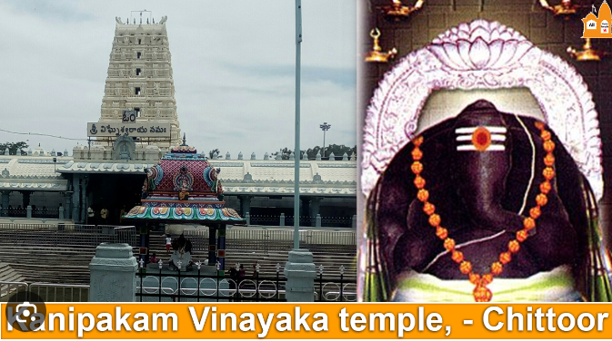
Vinayaka Temple or Sri Varasidhi Vinayaka Swamy Temple is a Hindu temple of Ganesha. It is located at Kanipakam in Chittoor district of Andhra Pradesh, India.[1] The temple is about 11 km from Chittoor and 68 km from Tirupati.According to legend, there were three brothers who were mute, deaf and blind. They were digging a well to fetch water to their field. The device they were using fell into the well hitting hard object. When they dug further, blood started to gush out of the well and the three got rid of their disabilities. The villagers rushed to the spot and found deity of Ganesha. Villagers dug further, but they were not able to find the base of the deity. The deity sits in the well which is always full of water.The temple was constructed in the early 11th century CE by the Chola Emperor Kulottunga I and was expanded further in 1336 by the Emperors of Vijayanagara.Vinayaka is the presiding deity of the temple. As per legend, it is believed that the deity is Svayambhu. The deity is seen in the well, full of water always.
LEPAKSHI
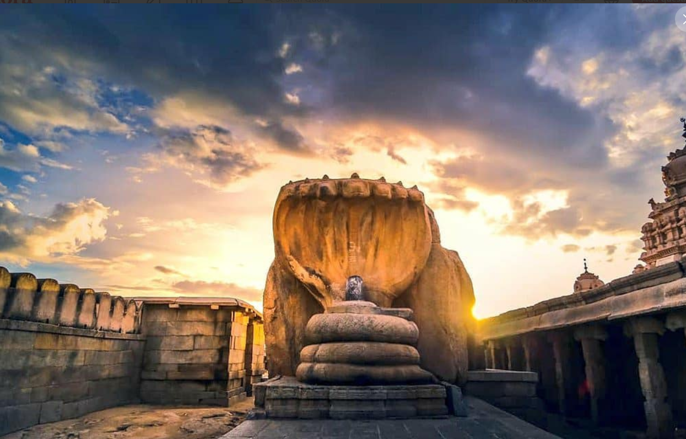
Lepakshi is a small village, about 15km from Hindupur and about 20km from the Kodikonda checkpost on (Bengaluru-Anantapur) NH-7. It is interesting to note how the place derived its name. The local lore goes that the wounded Jatayu (not Lalmohanbabu but the great bird from Ramayan he borrowed his pen name from) fell on a rocky hillock in this village while trying to stop the demon king Ravan from abducting Sita. Sadly, Ravan won the fight and left him to die after clipping his wings. When Ram arrived at the spot, he compassionately uttered the words, “Le Pakshi”, which means “Rise, bird”, in Telugu. Thus, the place came to be known as Lepakshi.
SREEKURMAM
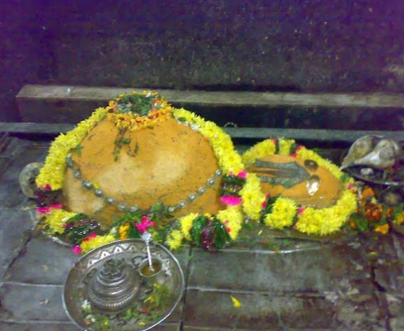
Sri Kurmam also known as Srikurmu or Srikurmais a village near Srikakulam, Andhra Pradesh, India. Srikurmam village is situated at a distance of 14.5 km to the South-east of Srikakulam town. It is in the Gara mandal of Srikakulam district. The village was named after the Srikurmam temple dedicated to Kurma avatar of the Hindu god Vishnu , which was re-established by Eastern Ganga Dynasty King Anantavarman Chodaganga Deva.Sri Kurmam (holy tortoise) is a famous place of pilgrimage and the temple here is unique of its kind in the entire India. The temple is noted for its architectural beauty and contains many inscriptions ranging from the Eleventh Century A.D. to the Nineteenth Century A.D. According to inscriptions in the temple dated 1281 AD, the holy place of Kürmakshetra was re-established by Ramanujacharya under the influence of Anantavarman Chodaganga Deva of Kalinga.Eastern ganga king Anangabhima Deva built it's pradakshina mandapa.Later the temple came under the jurisdiction of the king of Suryavanshi Gajapatis of orissa. The inscriptions throw light on the dynasties which held sway over this region. The temple is dedicated to Sri Kurmanatha, the second avatar of Vishnu, Kurma Avatar. Dolotsavam is the important festival and more than 20,000 pilgrims congregate on this occasion
INDRAKEELAADRI
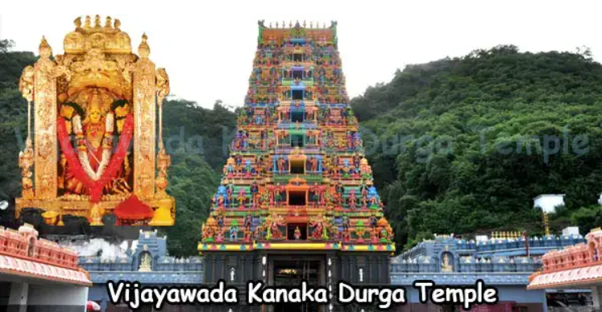
Kanaka Durga Temple, also known as Sri Kanaka Durgamma Devasthanam, is a Hindu temple dedicated to Kanaka Durga. The deity in this temple is also popularly referred as Kanaka Durga. The temple is located in Vijayawada, Andhra Pradesh, India on the Indrakeeladri Hills on the banks of Krishna River.Kaalika Purana, Durgaa Sapthashati and other Vedic literature have mentioned about Kanaka Durga on the Indrakeelaadri and have described the deity as Swayambhu, in Triteeya Kalpa.Kanaka Durga Temple is synonymous with Vijayawada. It is mentioned in the sacred texts.View of Temple Complex from Prakasam Barrage.A nearby temple viewed from Prakasam Barrage on night lights It is mentioned in the Hindu scriptures that the deity in the Sri Kanaka Durgamma Devasthanam is regarded as Swayambhu or self-manifested, hence considered very powerful.During the month of Sraavanam, Varalakshmi Vratam is performed on all Fridays with special reverence. More than 20,000 people attends the celebrations during this month.
PITHAPURAM
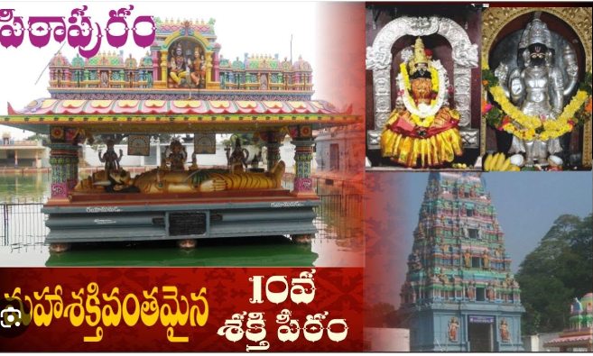
Pithapuram or Pitapuram is a city and a municipality in the Kakinada district of Andhra Pradesh, India. The city also forms a part of Godavari Urban Development Authority. Pitapuram is home to one of the eighteen Maha Sakthi Peethas, which are significant shrines and pilgrimage destinations in Shaktism.[5] Sripada Sri Vallabha, a prominent Hindu saint of 14th century born and lived in Pitapuram.Pitapuram as a sovereign city has history dating back to ancient times.It was mentioned in Samudragupta's Prayaga inscription by the name Pishtapuram ruled by the king Mahendra. Pitapuram also served as the initial capital of Eastern Chalukyas in 7th century CE before they moved their capital to Vengi.Later, Pithapuram was one of the Rastras, an administrative division, of the Eastern Chalukyas.One of the collateral branches of Chalukyas called Pitapuram Chalukyas, ruled the area around Rajahmundry, Pitapuram and Draksharama in the 12th and 13th centuries. From the 18th century, Pitapuram was the centre of Pitapuram Estate. The total area of the estate in 1903 was 393 square miles
ARASAVELLI SURYANARAYANA TEMPLE
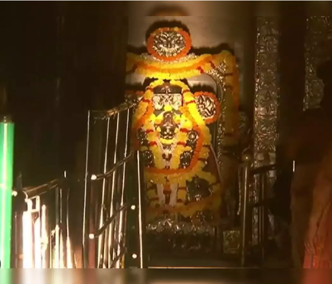
Arasavalli Sun Temple is a temple for Lord Surya, the solar deity, at Arasavalli in the Indian state of Andhra Pradesh. It is located in Arasavalli Village 1 km east of Srikakulam. It is believed that the temple was built in 7th century CE by King Devendra Varma, a great ruler of Eastern Ganga Dynasty of Kalinga .The present structure is largely a result of 18th century renovations.The temple was built in Rekha deula style of Kalinga Architecture like Puri Jagannath temple of Odisha. This temple is considered one of the oldest sun temples in India.The temple is one of the two major (remaining out of three, as the third temple was destroyed by Sikandar Shah Miri) temples who worship Lord Surya in India. The other two are the Konark Sun Temple, Odisha and Martand Sun Temple, Jammu and Kashmir .According to Padmapuranam, Sage Kasyapa installed the Idol of Surya at Arasavalli for the welfare of mankind. The Surya is of Kasyapasa Gotra. He is also termed a planetary King.The walls are inscribed saying the creator of the temple was the ruler Devendra Varma, stating it was built in the time period known to them as the 7th century. The walls also state the temple was fixed and changed to help with some of the sun temple's major flaws during the 18th and 19th century. Many of these changes were donated by the Dusi family.[citation needed] The temple fell into despair over the centuries and was reconstructed in 1778 CE by Elamanchili Pullaji Panthulu. Over the years the Sun temple was a landmark for many of the festivals celebrated in the town. Including festival Rathasaptami.
YAGANTI
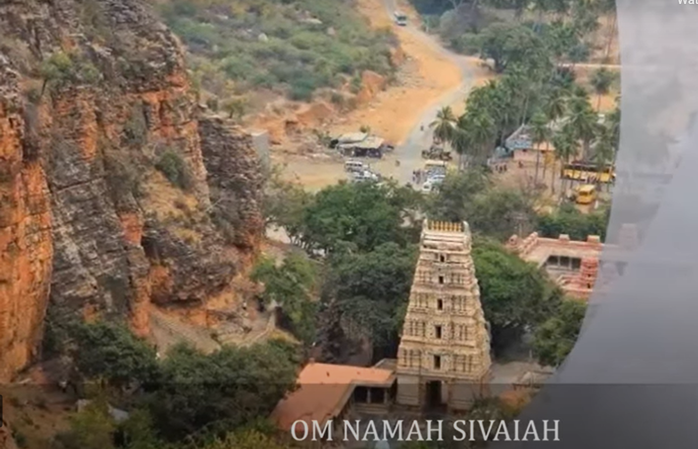
Yaganti Temple or Sri Yaganti Uma Maheswara Temple is a temple of Shiva in Nandyal district in the India state of Andhra Pradesh. It was built according to Vaishnavaite traditions.This temple was constructed by King Harihara Bukka Raya of the Sangama Dynasty of the Vijayanagara Empire in the 15th century.[citation needed] It was built according to Vaishnavaite traditions. One story of the site's origin is as follows: The sage Agastya wanted to build a temple for Lord Venkateswara on this site. However, the statue that was made could not be installed as the toe nail of the idol got broken. The sage was upset over this and performed a penance for Shiva. When Shiva appeared, he said the place suits Shiva better as it resembles Kailash. Agastya then requested Shiva to give the devotees a Parvathi Goddess as Lord Uma Maheswara in a single stone, which Shiva obliged. A second story is as follows: Chitteppa, a devotee of Shiva, was worshiping Shiva and Shiva appeared to him as a tiger. Chitteppa understood that it was Lord Shiva in tiger form, and shouted Neganti Shivanu ne kanti (meaning: I saw Shiva I saw), and danced with joy. There is a cave called Chitteppa nearby. Sri Yaganti Uma Maheswara Temple is one of the few temples patronized by one of the great dynasties of India. Every year Maha Shivaratri is celebrated and a large number of devotees from all over Andhra Pradesh visit. Shiva, Parvati and Nandi are the main deities in this temple. This temple is 14 km away from Banaganipalli in kurnool dt. The saint lord Veerabrahmendra swami stayed here for some time and wrote Kalagnanam
KOLANU BHARATHI
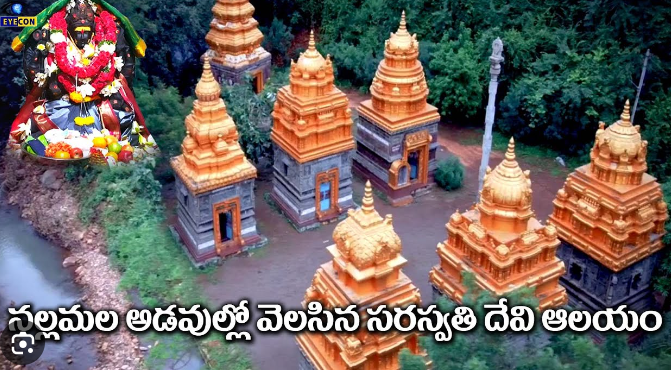
t is a famous Saraswati Devi temple in Andhra Pradesh . Kolana Bharati Kshetra is the field named Sri Bharati which is the first name of Goddess Saraswati in the Dwadasha Nama Stotras.The pool is called Bharti because of the glowing Bharti next to the pool. In the Krita Yuga , when the seven sages came to perform sacrifices, their protector Mu Amma came here and established itself as a self-governing place.It is located in Atmakuru Mandal of Kurnool District . It can be reached by road from Atmakuru. The surroundings are very beautiful. There is a small waterfall near here . The five Shiva temples built during the reign of the kings present us in a dilapidated state. Among the very rare Saraswati temples in the country , Kanu Bharati Kshetra is famous for the pool of goddess Saraswati in Nallamala in Kothapalli mandal of Kurnool district. As this Kshetra has become very important in Rayalaseema area, every year Vasantha Panchami celebrations are held grandly here under the auspices of devotees.
KASAPURAM
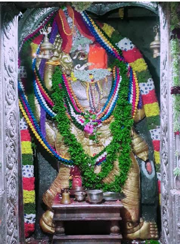
Sri Vyasaraya was meditating on the banks of the Tungabhadra river in 1521 AD during the Vijayanagara Empire . Vyasarayavalu is a painter. Every day he used to paint the form of Sri Anjaneya Swami on a stone in front of him with sandalwood which he wears . Every time Hanuman was painted like that , he would wear his true form and go away from there. Observing this, Vyasa Rayala made a yantra with the bijaksharas of Swami's Dwadasha names, and painted the true form of Sri Anjaneya Swami in it, so that Hanuman's energy could not go elsewhere. So Swami got trapped in that machine and stayed in it. One day when Vyasaraya was sleeping in the temple of Sri Bhogeshwara Swamy in Chippagiri mandal in present day Kurnool district , Anjaneyaswamy came in a dream and said, "I am in a certain area, build me a temple." When Vyasa asked Raya to tell him where that area was, Swami blessed him like this - "If you go towards the south, you will see a dry neem tree, if you go near it, Adi will sprout, there I will be in the earth". Vyasa Rayalu gets up early the next morning and travels south and finally finds that dry neem tree. As Raya approaches the tree, the tree sprouts. Surprised, Vyasaraya immediately digs the earth there. An idol of one-eyed Anjaneyaswamy is found in excavations. Rayalavaru enshrines the idol with great devotion and builds a temple. Every year a tanner makes and offers a pair of sandals to Anjaneya Swami who is a single devotee and observes celibacy. It is remarkable that when it comes the next day, it looks worn and torn. Devotees believe that Swami wears those sandals and goes on vacations at night. Swami's Grace Every year during the months of Vaisakh , Sravana , Kartika and Magha , countless devotees visit Swami and fulfill their wishes on Saturdays . Every year, thousands of devotees wear saffron robes and take Hanumadiksha at Nettikanti Anjaneyaswamy Temple. This temple is also famous for Hanumad Vrat and Pooja . Adequate inns and cottages are available for accommodation.
AMARAARAAMAM
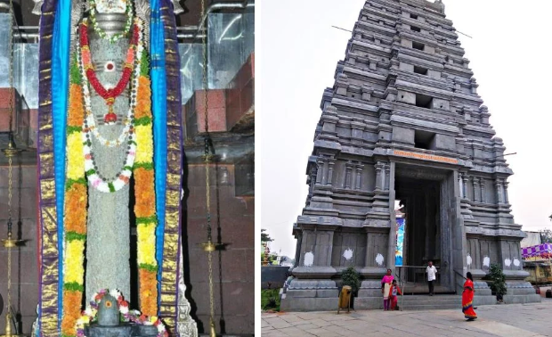
Amaravathi is in the Palnadu district, on the banks of the Krishna river. The deity Amara Lingeswara is believed to have been worshipped by Indra here. The temple is old and in three circles with many temples within the compound. Bala Chamundeswari is the goddess venerated here. The Venu Gopala Swami temple is also located in the campus of the main temple. The Sivalinga here is very tall that the archakas mount a pedestal platform, and perform the daily rituals as well as Abhisheka. The top of the Linga has a red stain on it. According to legend, Sivalinga was growing up in size and to stop its growth, a nail has been hit onto the top of the Sivalinga. When the nail dug into the Linga, blood oozed from the Sivalinga.
KSHEERAARAAMAM
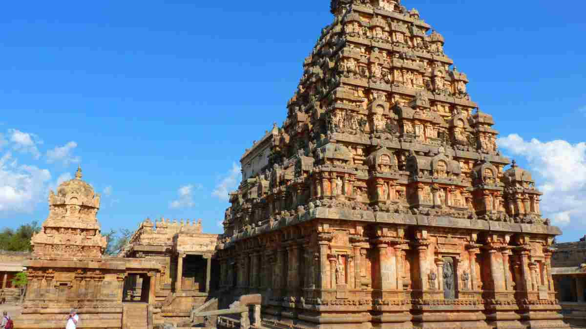
Ksheerarama is one of the five Pancharama Kshetras that are sacred to the Hindu god Shiva. The temple is located in Palakollu of West Godavari in the Indian state of Andhra Pradesh. Shiva is known locally as Ksheera Ramalingeswara Swamy. It is believed that staying one day in Kshirarama is equivalent to staying one year in Varanasi. It is one of the centrally protected monuments of national importance. It is one of the five powerful Shiva temples in Southern India that form the "Pancharama Kshetram". The remaining four are Somarama Temple in Bhimavaram; Draksharama Temple in Draksharamam; Kumararama Temple in Samalkota; and Amararama Temple in Amaravati, state of Andhra Pradesh.
DRAKSHARAAMAM
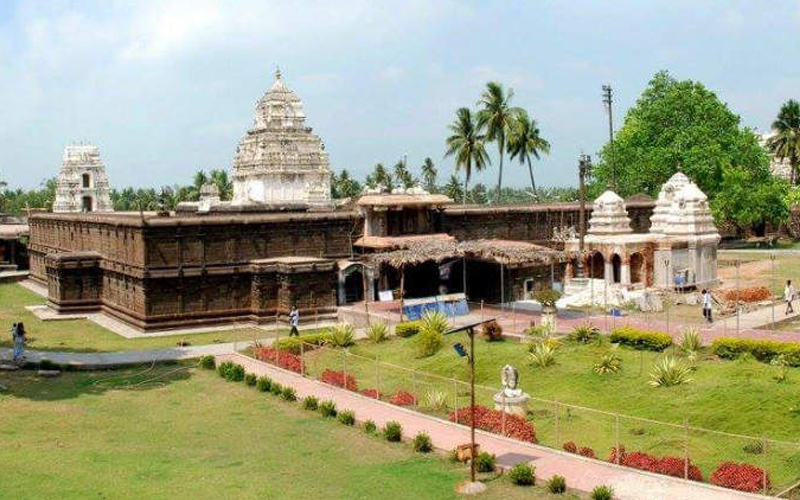
Draksharamam is one of the five Pancharama Kshetras that are sacred to the Hindu god Siva. The temple is located in Draksharamam town of Konaseema district in the Indian state of Andhra Pradesh. Bhimeswara Swamy refers to Lord Siva in this temple.Inscriptions in the temple reveal that it was built between the 9th and 10th centuries CE by the Eastern Chalukyan king, Bhima. The big Mandapam of the temple was built by Ganga Mahadevi ,daughter-In-Law of Eastern Ganga Dynasty king Narasingha Deva I of Odisha.[2] Architecturally and sculpturally, the temple reflects a blend of Chalukyan and Chola styles. The temple is historically prominent. It was built by Eastern Chalukyas who reigned over this area. It's believed to have been constructed earlier to the Bhimeswaraswamy temple in SamarlaKota (Samalkot) that was built between 892 C.E. and 922 C.E.
BHEEMAVARAM
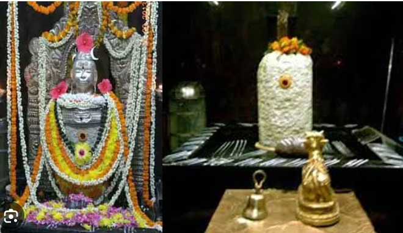
The name Bhimavaram literally means "the gift of Bhima". According to a legend, in around 890–918 AD, an Eastern Chalukya king named Chalukya Bheema built a Siva temple and laid the foundation to this town.[8] It was originally called "Bhimapuram", but the name gradually changed to "Bhimavaram"; "puram" refers to a dwelling place while "varam" means an endowment in Telugu. An alternative explanation is, that the sound va (labiodental) is preferred to ba, pa (labials) in colloquial language and over a period of time tend to shift from pa to va. Hence "varam" from "puram".
KUMAARARAAMAM
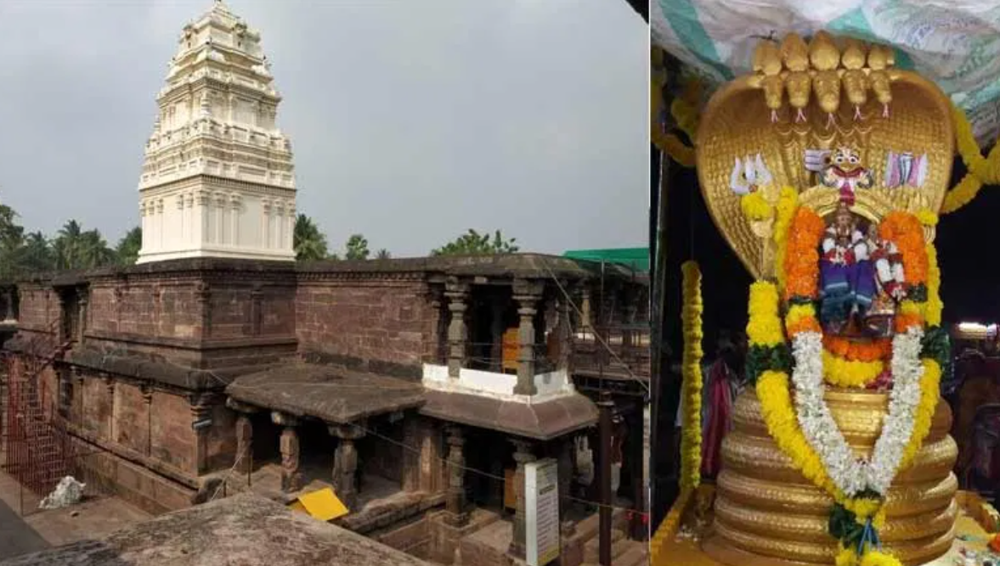
The temple is 1 kilometer from Samarlakota City. The limestone Linga, installed in the shrine, is 16 feet tall that it rises from the pedestal on the ground floor and enters the second floor by piercing the roof, where the Rudrabhaga is worshipped. The temple has a mandapam that is supported by 100 pillars and is of great architectural importance. The temple has an Ekasila Nandi (A Bull carved from a single stone) guarding the Shiva Lingam at the entrance of the temple. The temple resembles the other Pancharama temple at Draksharama which is also called Bhimeswara Alayam.
MANGALGIRI
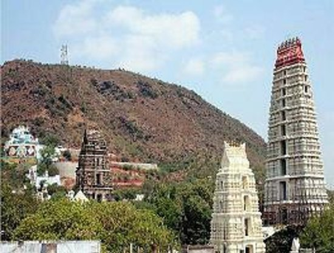
Lakshmi Narasimha Temple is a Vaishnavite temple and one of the eight sacred places of Lord Vishnu in India. It is also known for being one of the eight mahakshetras Narasimha in India.[1] It is situated at the foot of the Auspicious Hill in Mangalagiri which is part of the Mangalagiri Tadepalle Municipal Corporation part of Guntur district of Andhra Pradesh, India. It is one of the temples in the series of three temples located on and at the bottom of the hill, the other two being Panakala Narasimha Temple on the hill and Gandala Narasimha Temple at the top of the hill. It has one of the highest gopurams in South India and only one of its type in this part of India. It is 153 feet (47 m) in height and 49 feet (15 m) wide and has eleven storeys. The Lakshmi Narasimha Temple is popularly believed to have been founded by Yudhishthira, the eldest Pandava brother. The temple's history is said to be recorded in the Brahma Vaivarta Purana, one of the old Hindu religious scriptures.This temple was patronized by the Vijayanagara rulers. There is an inscription from the time of Krishnadevaraya, who had visited the temple, at the temple site.[4] The temple's tall eleven story gali gopuram was built by Vasireddy Venkatadri Nayudu, a zamindari patron and devotee of Narasimha.
TIRUPATI
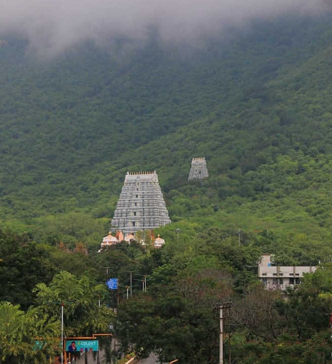
Tirupati is a city in the Indian state of Andhra Pradesh. It is the administrative headquarters of the Tirupati district. The city is home to the important Hindu shrine of Tirumala Venkateshwara Temple and other historic temples.Tourism sector is of great importance to the city. It is because of the presence of Tirumala Venkateshvara Temple and a number of other temples in and around the city. It attracts large number of tourists which helps the tourism department of the state in generating revenue.Tirumala is said to be one of the most visited religious sites on earth, and Tirupati Temple is currently a Guinness World Record holder for most visited temple in the world.[citation needed] Tourism comprises a large portion of the Tirupati economy.
SRISAIALM
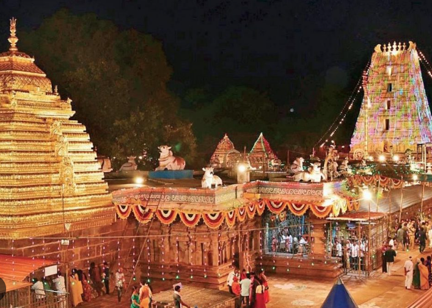
Srisailam is a census town in Nandyal district of the Indian state of Andhra Pradesh. It is the mandal headquarters of Srisailam mandal in Atmakur revenue division.[4] It is located about 160 kilometres (99 mi) from the district headquarters Nandyal, 180 kilometres (112 mi) from Kurnool, and it is located about 264 kilometres (164 mi) from Vijayawada. The town is famous for Mallikarjuna Jyotirlinga Temple and is one of the holy pilgrimage sites for Saivism and Shaktism sects of Hinduism. The town is classified as both Jyotirlinga and Shakti Peetha. As of 2001 India census,[5] Srisailam had a population of 23,257. Males constituted 54% of the population and females 46%. Srisailam Project (RFC) Township has an average literacy rate of 75.62% higher than the state average of 67.02%. Male literacy is around 85.68% while female literacy rate is 63.24%. 13% of the population is under 6 years of age.
SRIKALAHASTI
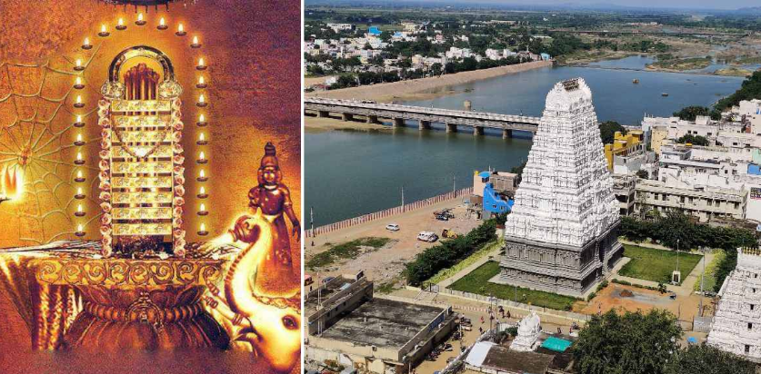
Srikalahasti is a holy town at Tirupati district in the Indian state of Andhra Pradesh. It is a municipality and the revenue division of Srikalahasti mandal and Srikalahasti revenue division.[3][4] It is a part of the Tirupati Urban Development Authority, which is located on the banks of the River Swarnamukhi.Srikalahasti, derives its name from the combination of the Sanskrit words Sri (spider), Kala (snake) and Hasti (elephant), which once worshipped the Shiva lingam here and attained moksha.[6] As per another legend, Vayu and Adishesha had a dispute to find out who is superior. To prove their superiority, Adishesha encircled Mount Kailash, Vayu tried to disentangle him by creating a vortex. The vortex resulted in eight parts from Kailash fell into eight different places which are Trincomalee, Srikalahasti, Tiruchirappalli, Thiruenkoimalai, Rajathagiri, Neerthagiri, Ratnagiri, and Swethagiri Thirupangeeli.
SIMHACHALAM
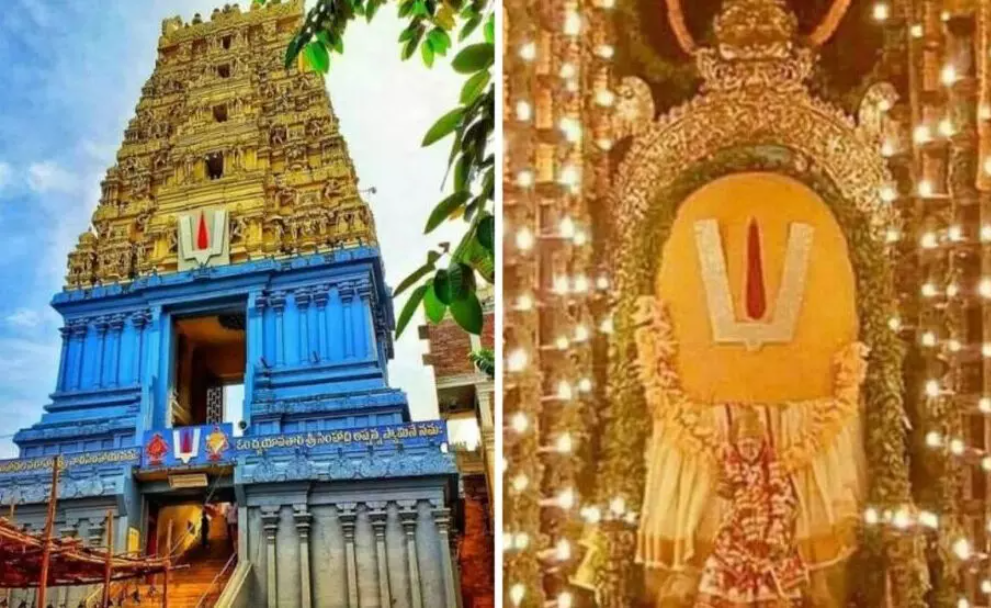
Sri Varaha Lakshmi Narasimha temple, Simhachalam, is a Hindu temple situated on the Simhachalam Hill Range,which is 300 metres above the sea level in Visakhapatnam, Andhra Pradesh, India. It is dedicated to Lord Vishnu, who is worshipped there as Varaha Narasimha. As per the temple's legend, Vishnu manifested in this form (lion's head and human body) after saving his devotee Prahlada from a murder attempt by the latter's father Hiranyakashipu.Except on Akshaya Trutiya, the idol of Varaha Narasimha is covered with sandalwood paste throughout the year, which makes it resemble a linga. The temple was built in Kalingan architecture styles and stands unique in the historical region of Kalinga.The Present temple was built by Eastern Ganga king Narasingha Deva I in the 13th century and consecrated by his son Bhanudeva I in 1268 AD.[1] [2]The temple was built by Akthayi Senapathi, on the command of Narasingha Deva .
ANNAVARAM
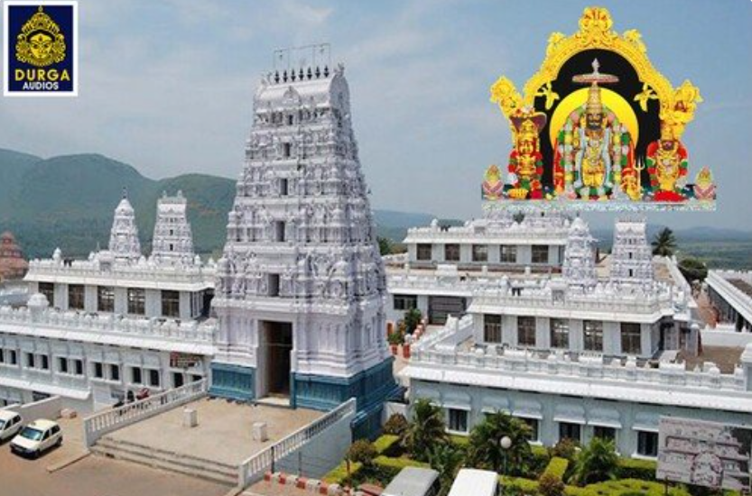